Estratégias avançadas de Sudoku explicadas
x-wing
Tem esse nome pela figura que faz quando ocorre. Para que possa ser utilizada, devemos ter 2 pares de células formando os 4 cantos de um retângulo. Cada par deve estar em um conjunto onde somente possa ocorrer aquele candidato nessas duas células (duas colunas ou duas linhas). Vamos para o exemplo, onde podemos visualizar melhor o que ocorre.
Ex: filtrando as células que possuem o 9 como candidato, vemos que na linha 1 e na linha 6 apenas um par de células pode conter 9. Os dois pares estão visualmente nos cantos de um retângulo. Assim, podemos retirar os candidatos 9 de quaisquer outras células das colunas C e I, que são as colunas de ligação entre os dois pares (células C3, I4 e I9).
imagem
Na verdade, a lógica por trás dessa técnica é a mesma das cadeias múltiplas. A facilidade é que x-wing é muito mais visual que as cadeias multiplas normais. Vejam:
imagem
Na linha 1 temos uma cadeia e em 6 temos outra. Percebam que azul faz interseção com abóbora e verde-limão com rosa. Assim, quaisquer células que possuam interseção entre azul-ábobora e verde-limão-rosa podem ter o candidato 9 retirado.
As estratégias avançadas de Sudoku são utilizadas nos níveis mais difíceis e servem para eliminar candidatos ou para encontrar a solução para uma célula específica. Seja qual for o caso, a sua aplicação exige sempre altos níveis de concentração já que funcionam por dedução.
A técnica X-Wing é uma das estratégias avançadas de Sudoku mais básicas. Também pode ser aplicada em níveis intermédios, ainda que a sua incidência seja muito reduzida nestes casos. O seu objetivo é eliminar candidatos.
O jogador pode utilizar esta estratégia quando existe um candidato repetido em quatro células que formam um quadrado ou retângulo quando unidas mentalmente por coluna e linha. Ao traçar uma cruz que une diagonalmente as extremidades desta forma geométrica, é possível verificar que existem apenas dois pares de posições para esse dígito.
O passo seguinte será testar cada um dos pares na tabela e eliminar esse número de qualquer célula que se torne impossível em ambos os casos.
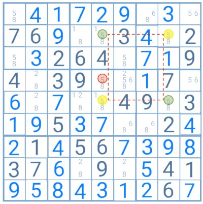Neste exemplo, o número 5 forma o padrão necessário para aplicar a técnica X-Wing. Ao ligar as células que contêm este número é possível ver com facilidade que apenas os pares destacados a verde ou a amarelo seriam possíveis nesta situação, já que um invalida o outro.
Ao testar ambos os pares na tabela, o número 5 destacado a vermelho surge como impossível nos dois casos. Pode, por isso, ser eliminado como candidato a essa célula.
como e quando utilizar
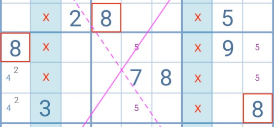
A técnica de resolução de Sudoku X-Wing é uma das mais frequentemente utilizadas nos puzzles a partir de um nível de dificuldade médio. É uma estratégia muito simples e direta, com um padrão facilmente identificável. É aplicada apenas sobre um dígito e o seu objetivo é reduzir o número de células na tabela que o podem conter como candidato.
Juntamente com a técnica Swordfish, a estratégia de Sudoku X-Wing é uma das mais úteis para qualquer jogador. O padrão necessário à sua aplicação é comum e podem mesmo surgir vários em simultâneo na tabela. Adicionalmente, quando apenas um requisito não está assegurado, o jogador continua a ter a possibilidade de utilizar as suas variantes Finned e Sashimi.
condições
Para aplicar esta técnica, o jogador deve encontrar na tabela 2 colunas ou 2 linhas nas quais um dígito é candidato em apenas duas células em cada. Estas quadrículas devem estar ligadas por linha e coluna para que a sua união forme um retângulo ou quadrado.
O princípio desta técnica é muito simples. Como o dígito tem apenas duas possíveis soluções em cada uma das colunas/linhas em análise e cada célula é diretamente afetada pelas demais, o jogador pode identificar apenas duas possíveis soluções nesta relação. Ou seja, cada par diagonalmente oposto impossibilita o outro.
Ao testar cada par na tabela, torna-se claro que quando a técnica de Sudoku X-Wing é utilizada em linhas, o dígito não poderá ser candidato nas colunas ligadas às células base do padrão. Igualmente, se o padrão estiver presente em colunas, o dígito não poderá ser candidato nas linhas ligadas às suas células.
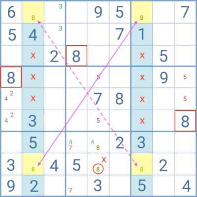Uma das regras básicas do Sudoku dita que cada linha e cada coluna deve conter os números de 1 a 9, sem repetições.
Assim, ao analisar este exemplo, o jogador percebe que o número 8 tem apenas duas possibilidades dentro das colunas destacadas em azul. Como as 4 células estão ligadas entre si, é possível aplicar a técnica de Sudoku X-Wing nesta tabela.
Se as células ligadas pela linha a tracejado forem verdadeiras, o outro par converte-se automaticamente em falso e vice-versa. Segundo esta técnica de resolução, o jogador tem todas as condições para eliminar o número 8 das linhas que unem ao padrão base.
Neste exemplo, o 8 destacado com um círculo a vermelho pode ser eliminado.
finned x-wing
A técnica Finned X-Wing pode ser aplicada quando o padrão X-Wing está presente na tabela, mas uma das células base tem “barbatanas”. Ou seja, dentro do seu grupo e da sua linha existem mais quadrículas que contêm o dígito como candidato. Como estas células “extra” estão restritas a um grupo, o jogador deve analisar duas opções:
1.Se uma das células extra for a solução para o dígito, que candidatos posso eliminar?
2.Se as células extra são falsas, o padrão X-Wing é aplicável. Que candidatos posso eliminar nesse caso?
As eliminações partilhadas pelas respostas a estas perguntas podem ser removidas com segurança da tabela.
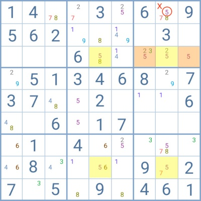Neste exemplo, as células em amarelo formam um padrão X-Wing típico com o número 5. Contudo, as quadrículas em laranja também contêm o 5 como candidato.
Como partilham o grupo com uma das células base do padrão, estas células alaranjadas são na realidade “barbatanas”. O jogador pode, assim, utilizar a técnica Finned X-Wing. Pode então questionar-se:
1.Se a solução para o número 5 estiver numa das células em laranja, que candidatos posso eliminar?
2.E se o padrão X-Wing for aplicável?
Neste caso, o 5 destacado com um círculo a vermelho é a única eliminação partilhada por ambas as respostas.
sashimi x-wing
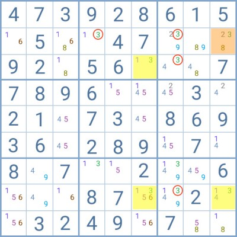
O padrão Sashimi é muito similar ao do Sudoku X-Wing. Também neste caso o jogador encontra um dígito com apenas duas possíveis soluções em duas linhas/colunas. No entanto, uma das células não está unida às demais por linha ou coluna.
Tal como com o padrão típico, o jogador pode isolar cada par diagonalmente oposto e testá-los na tabela. As eliminações partilhadas por ambos os pares podem ser apagadas.
A principal diferença entre a técnica de Sudoku X-Wing e a Sashimi está na facilidade de identificação dos candidatos que podem ser eliminados. Se no primeiro caso o jogador sabe de imediato quais os candidatos que pode remover, no caso da Sashimi é necessário testar efetivamente cada par na tabela.
Nesta tabela, o jogador encontra duas colunas com apenas duas possibilidades em cada para o número 3. Enquanto as células em amarelo parecem formar um padrão X-Wing tradicional, a quadrícula em laranja impede a formação de um retângulo/quadrado perfeito já que não está ligada por linha.
Contudo, o princípio básico da técnica X-Wing continua a ser aplicável. Quando um par diagonalmente oposto é verdadeiro, o outro é falso. Com a Sashimi, o jogador terá de obrigatoriamente de testar cada par da tabela para descobrir quais os candidatos que pode eliminar.
Neste exemplo, todos os números 3 destacados com um círculo vermelho podem ser eliminados.
A técnica de Sudoku X-Wing é tão comum que é normal que o jogador encontre o seu padrão frequentemente e por vezes em simultâneo, formado por diferentes dígitos ou por um número em várias colunas ou linhas.
Desde que os requisitos para o uso desta técnica e das suas variantes estejam assegurados, o jogador pode aplicá-las tanto quanto queira para tentar reduzir o número de candidatos presentes na tabela ao máximo
swordfish ou padrão espardate
É uma generalização do x-wing. Mas desta vez, é necessário ter 3 linhas ou colunas que só possuam duas células possível para um dado candidato. Essas células devem compartilhar as mesmas 3 linhas ou colunas entre si. Caso isso ocorra, podemos retirar os candidatos das células das linhas ou colunas de ligação.
Ex: As linhas 5, 8 e 9 possuem apenas duas células possíveis para o candidato 8. Esses três pares compartilham as colunas A, F e H. Então, podemos retirar o 8 como candidato de todas as outras células dessas colunas (A1, F4, F6 e F7).
imagem
Tal como a técnica X-Wing, a estratégica Swordfish ajuda a eliminar candidatos nas células. Para aplicá-la, o jogador deve encontrar um dígito candidato a duas células numa mesma linha, em três linhas diferentes. Estas células devem também estar unidas por coluna, independentemente da figura geométrica que criem.
Ao ligar estas casas, o resultado será uma cadeia fechada na qual apenas dois pares de posições são possíveis para esse dígito. O jogador deve então testá-las e eliminar esse número como candidato a qualquer célula que se torne impossível quando ambas são aplicadas.
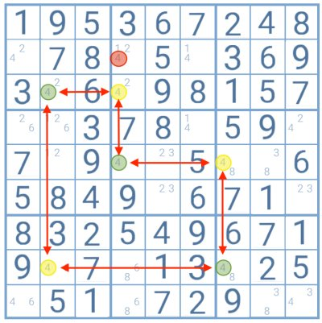Nesta tabela, o número 4 é candidato em duas células, em três linhas distintas, o que permite a utilização da técnica Swordfish. Quando estas células são ligadas é possível verificar que sempre que um dígito destacado a verde é possível, aqueles a amarelo tornam-se impossíveis, e vice-versa. Assim, existem apenas duas possibilidades nesta cadeia com o número 4, o conjunto a verde ou o conjunto a amarelo.
Ao aplicar as duas na tabela, o jogador descobre que o 4 destacado a vermelho seria impossível como candidato a essa célula em ambos os casos. Pode por isso ser eliminado, deixando apenas os números 1 e 2 como candidatos a essa quadrícula.
como aplicar e usar
.jpg)
A técnica Swordfish (peixe espadarte) é uma estratégia avançada de eliminação de candidatos no Sudoku.
A sua aplicação resulta normalmente na solução de uma ou mais células na tabela fruto desta eliminação de possibilidades. Também pode simplesmente alterar a estrutura do jogo e permitir a utilização de técnicas mais simples para progredir no puzzle.
Para que o jogador possa aplicar a técnica Swordfish devem existir obrigatoriamente algumas condições na tabela. No entanto, quando somente uma não está presente, existe mesmo assim a possibilidade de aplicar as variantes Finned Swordfish e Sashimi Swordfish. Nestes casos a eliminação de candidatos é mais restrita, mas continua a ser possível.
condição
A técnica Swordfish aplica-se apenas a 1 dígito e utiliza 3 linhas e 3 colunas.
A tabela deve conter 3 linhas ou 3 colunas nas quais esse dígito é candidato somente em 2 ou 3 células. Cada uma destas quadrículas deve estar unida a outra por coluna/linha. A forma geométrica criada por esta conexão não é importante.
Como o dígito tem apenas 2 ou 3 posições possíveis nessas linhas/colunas e as células estão unidas, a sua solução estará obrigatoriamente nesta cadeia de ligações. Esta ligação também implica que a solução para uma das células afetará diretamente as demais.
Ao assumir esta relação, o jogador pode testar as diferentes configurações que surgem quando posiciona um dos dígitos. Se após testar todas as possibilidades encontrar uma ou mais células nas quais o dígito não poderia ser candidato em nenhuma das configurações, poderá eliminá-lo das mesmas.
Esta é a base teórica desta técnica. Felizmente, o jogador não precisa perder tempo a testar todas as possibilidades porque o resultado é sempre o mesmo. Em todos os casos, o dígito nunca pode ser candidato nas demais células das linhas/colunas ligadas ao padrão original.
padrão em linha
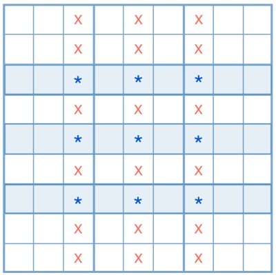
Este é o padrão em linha mais básico sobre o qual se pode aplicar a técnica Swordfish.
Nas três linhas destacadas a azul, o dígito é candidato a apenas três posições e cada uma das células está ligada a outra por coluna.
Dado que a solução para esse dígito residirá obrigatoriamente nas posições marcadas nas linhas em azul, já não poderá ser candidato nas colunas partilhadas por estas células.
Este padrão básico é o menos comum no Sudoku. Assim, em vez de procurá-lo, o jogador deve antes:
- Tentar encontrar 3 linhas nas quais o dígito é candidato em apenas 2 ou 3 células.
- Verificar se as células estão ligadas por coluna.
- Confirmar se cada coluna contém pelo menos duas células do padrão. Não é necessário que cada uma contenha 3 células das 3 linhas.

Esta tabela oferece um melhor exemplo do tipo de padrões que o jogador poderá encontrar durante um jogo de Sudoku.
O número 1 tem apenas duas soluções possíveis em cada uma das três linhas destacadas em azul. Como estas células estão ligadas por coluna, o jogador pode utilizar a técnica Swordfish.
Desta forma, o número 1 não pode ser candidato em nenhuma das colunas destacadas em vermelho. Os candidatos marcados com um círculo podem ser eliminados.
padrão em coluna
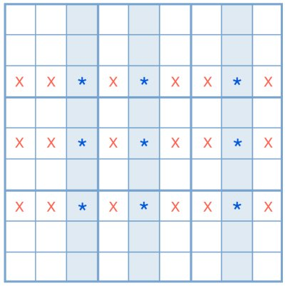
O padrão em coluna funciona exatamente da mesma forma que o padrão em linha, mas invertido.
Agora, o dígito tem de ser candidato em apenas 2 ou 3 células de três colunas distintas. Cada quadrícula deve estar unida a outra por linha.
Ao aplicar a técnica Swordfish, o jogador poderá eliminar esse dígito como candidato às células das linhas ligadas ao padrão original
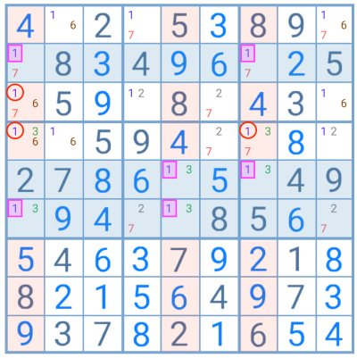Neste exemplo, o número 3 é candidato em apenas 2 células em cada uma das três colunas destacadas em azul. Além disso, cada uma destas está ligada a outra por linha.
Assim, segundo a técnica espadarte, o 3 não poderá ser candidato em nenhuma das células das linhas destacadas a vermelho. Os dígitos marcados com um círculo podem ser eliminados.
finned Swordfish
O jogador pode aplicar esta variante da técnica original quando uma das linhas ou colunas do padrão espadarte contém uma célula extra com o dígito em análise.
Por exemplo, se o jogador procura a configuração 2/2/2, isto significa que o dígito será candidato a uma terceira célula numa das linhas/colunas. Se a configuração é 3/3/3, então uma das linhas/colunas terá 4 quadrículas com esse número.
Para poder aplicar esta estratégia, a célula extra deve estar posicionada sobre a cadeia de ligações do padrão espadarte tradicional e partilhar o grupo com uma das células da configuração base.
O jogador deve então questionar-se: Se célula extra é falsa e posso aplicar técnica Swordfish, quais os candidatos que poderia eliminar? E se é verdadeira, que candidatos é que elimina?
Os candidatos que seriam eliminados simultaneamente por ambas as respostas podem ser removidos.
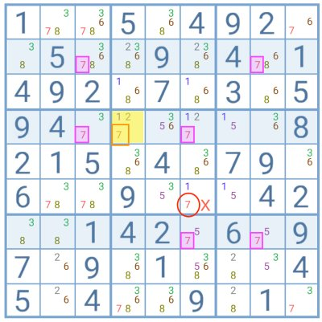Neste exemplo, o número 7 na célula em amarelo impossibilita a aplicação da técnica Swordfish nas linhas destacadas a azul.
Contudo, está posicionado sobre a cadeia de ligações do hipotético padrão espadarte e partilha o grupo com uma das células base deste.
Questões: Se pudesse aplicar o padrão espadarte criado pelos dígitos a rosa, que candidatos é que poderia eliminar? Se o 7 é a solução para a célula em amarelo, que candidatos é que elimina?
Neste caso, o 7 marcado com um círculo vermelho seria a única eliminação partilhada pelas respostas a estas perguntas. Pode, por isso, ser removido.
sashimi Swordfish
Esta técnica só pode ser aplicada quando o dígito é candidato somente em duas células de 3 linhas ou colunas distintas. Neste padrão, uma das quadrículas não está ligada às demais.
O ponto principal desta estratégia é que apenas se poderão eliminar candidatos dentro do mesmo grupo da célula isolada. A sua explicação é mais clara com um exemplo
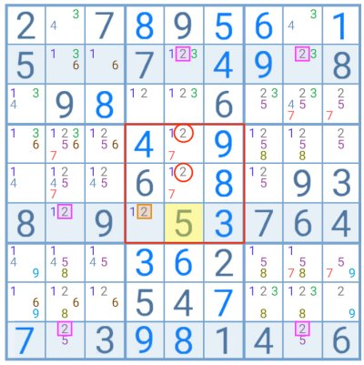Nesta tabela, o jogador tem três linhas (destacadas em azul) nas quais o número 2 é candidato apenas em duas células. No entanto, o 2 marcado a laranja na segunda linha não está ligado por coluna a nenhuma das demais quadrículas.
Para que existisse um padrão espadarte, a célula em amarelo com o número 5 teria de conter o 2 como candidato.
Com a técnica Sashimi o jogador deve analisar duas situações:
1.Só existem duas posições possíveis para o número 2 na segunda linha. Se o dígito a laranja for verdadeiro, então aqueles marcados com um círculo tornam-se imediatamente impossíveis.
2.Se o número 2 fosse candidato na célula em amarelo, haveria um padrão Finned Swordfish na tabela. O 2 em laranja seria, nesse caso, a célula extra. Se aplicar esta técnica com base nesta suposição, os números marcados com um círculo seriam impossíveis. (Note que a base desta suposição é o método Sashimi e este se aplica somente a grupos).
Conclusão: em ambas as hipóteses, os candidatos marcados com um círculo a vermelho seriam eliminados. Segundo a técnica Sashimi, podem, por isso, ser removidos.
A técnica Swordfish é bastante utilizada nos puzzles de Sudoku mais avançados dada a frequência do padrão espadarte nestes. É também uma das mais simples de entender. A principal dificuldade para o jogador será detectar o padrão necessário.
Esta técnica de resolução é, além do mais, uma das mais produtivas e úteis, especialmente quando aplicada nas fases finais do puzzle. Se o número de candidatos por célula for reduzido, maior será a probabilidade de que esta estratégia resulte na descoberta da solução para uma ou mais quadrículas.
CADEIAS:
Essa técnica visa a busca de incoerências lógicas nos relacionamentos dos candidatos em cada conjunto (linha, coluna ou sub-caixa). Isso é feito sempre que um conjunto possuir apenas duas células com um determinado candidato, fazendo com que a colocação em um implique na retirada do outro.
Buscando esses relacionamentos, é possível verificar situações em que a regra do sudoku é quebrada (ou nenhum daquele candidato ou dois ou mais candidatos no conjunto). Com isso, fazemos as retiradas adequadas a cada caso.
Ex: a) filtrando somente os candidatos 2, vemos a cadeia destacada nas cores verde-limão e azul. Usando essas duas cores, mostra-se mais claramente a alternância entre as células com candidatos. Repare que a célula E6 não pode ter 2 como candidato, pois isso faria com que elementos alternados de uma mesma cadeia (células C6 e E9) não pudessem ser marcados com o 2. Podemos, então, retirar o 2 como candidato.
imagem
b) nesse caso, vemos que elementos da própria cadeia analisada caem em contradição com a regra. Marcar qualquer 3 destacado em azul tornaria a solução inválida. Logo, podemos retirar o 3 de todas as células marcadas em azul.
imagem
CADEIAS MÚLTIPLAS
Nesse método, analisamos duas cadeias complementares, as quais possuem interseção em algum conjunto. Verificamos os elementos que fazem essa interseção para depois procurar elementos que façam interseção com suas alternâncias. Caso exista alguma célula que se encaixe nessa interseção, pode ter o candidato analisado retirado.
Ex: filtrando os candidatos, deixando somente o 9 aparente, podemos destacar as cadeias abaixo (uma em verde-limão e azul e outra em rosa e abóbora). Um elemento rosa (A5) compartilha a linha A com um elemento azul (A9). Logo, qualquer célula que esteja na interseção de algum conjunto entre células verde-limão e laranja pode ter o 9 retirado. É o caso do 9 em D4.
imagem
Cadeias forçadas
As cadeias forçadas são uma das estratégias avançadas de Sudoku mais fáceis de entender. Infelizmente, aplicá-las requer altos níveis de concentração e o seu resultado pode ser incerto. Quando funcionam, o jogador consegue a solução para uma célula.
Para aplicar cadeias forçadas simples devem existir na tabela casas com apenas dois candidatos. O jogador deve escolher uma e testar a evolução da tabela quando cada dígito dessa célula é utilizado. O objetivo é encontrar uma quadrícula na qual a solução é sempre a mesma, independentemente do dígito inicial escolhido. Quando tal sucede, o jogador terá encontrado a solução final para essa célula específica.
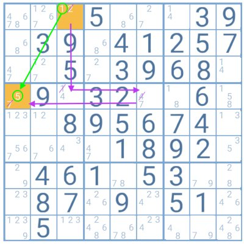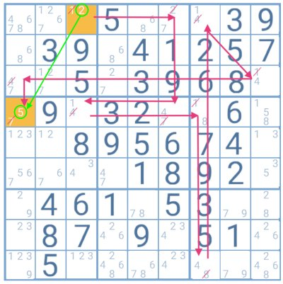
Neste exemplo, a célula destacada no topo da tabela, com os números 1 e 2, foi usada para aplicar a técnica das cadeias forçadas. Quando ambos os dígitos são usados, o jogador descobre que o resultado na segunda célula destacada (com os números 5 e 7) é sempre 5. Assim, este dígito será a solução para essa casa.
Note-se que ao testar o número 1, o jogador poderia ter iniciado a cadeia seguindo para o lado direito (para a célula com o 1 e o 4 como candidatos). Este caminho seria mais longo, mas uma vez mais o resultado seria o número 5 na célula destacada.
De todas as estratégias avançadas de Sudoku, as cadeias forçadas tendem a ser das mais evitadas pelos jogadores já que as cadeias podem ser bastante longas e morosas e nem sempre produzem os resultados desejados.
xy-wing
Caso existam três células com exatamente dois candidatos em cada uma delas, de forma que cada par seja da seguinte forma: (x,y), (x,z) e (z,y); e a célula contendo (x,y) compartilhe algum conjunto com (x,z) e com (y,z). Então, as células que estiverem em conjuntos compartilhados por (x,z) e (y,z) podem ter o candidato z retirado.
Ex: as três céluas destacadas em azul possuem os candidatos 5(x), 3(y) e 4(z) distribuídos em pares e compartilham um conjunto entre si (o par (3,4) compartilha a terceira linha com (3,5) e o par (4,5) compartilha a sub-caixa do meio com (3,5); logo (3,5) faz a ligação entre os outros dois pares) . Então, as células que compartilham conjuntos entre os pares (3,4) e (4,5) (estão destacadas em amarelo) podem ter o 4 retirado.
Imagem
Caso não tenham percebido, as células compartilhadas são as da primeira linha da sub-caixa da esquerda e as da terceira linha da sub-caixa do meio.
A técnica XY-Wing é utilizada para remover candidatos. Pode ser aplicada quando existem três células na tabela com apenas um par de candidatos e estas partilham pelo menos um dígito entre si (p.e. AB/AC/CB). O Y no nome desta técnica refere-se à suposta forma criada pela união destas células, com uma a funcionar como base ou talo e as demais como ramos.
O jogador deve então traçar linhas imaginárias sobre cada linha e coluna destas células, ligando-as com a forma de um quadrado ou retângulo. Se no seguimento dessas linhas ou na interseção destas existirem células que partilhem candidatos com os ramos ou a base na extremidade de cada, estes podem ser eliminados.
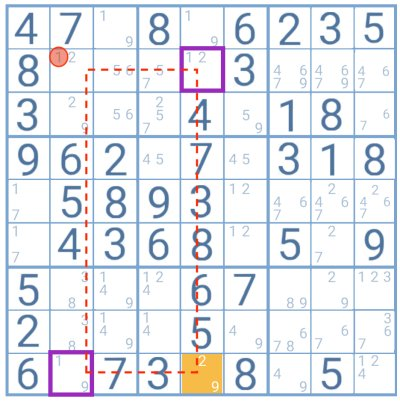Neste exemplo, a célula base ou talo (a laranja) contém os candidatos 2 e 9 e está ligada aos ramos (quadrados a roxo) com os quais partilha pelo menos um dígito.
Se qualquer das células atravessadas pela linha vermelha contivesse o candidato partilhado pelo ramo e pelo talo, este poderia ser eliminado destas. Contudo, este não é o caso.
No entanto, a célula de interseção entre os ramos partilha com estes um candidato, o número 1, o que permite ao jogador eliminá-lo dessa célula.